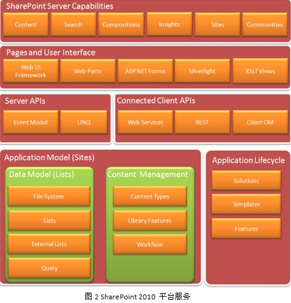

当前最新版本 SharePoint 2010
一个新的产品，更加关注的是其新增功能。SharePoint 2010的新增功能主要集中在3个方面：开发人员工作效率、丰富的平台服务、灵活的部署，具体来说其新增功能如表1所示：
| 功能 |
功能描述 |
| 开发人员工作效率 |
vs2010 SharePoint 项目类型和项
vs2010 Sharepoint 工具扩展性
vs Extensions For SharePoint
升级Windows7和Windows Vista操作系统支持
SharePoint Designer 2010
开发人员仪表板
Team Foundation Server 2010集成 |
| 丰富的平台服务 |
SharePoint功能区
SharePoint对话框
SilverlightWeb 部件
列表查找和关系
Business Connectivity Services
LINQ to SharePoint
性能增强
解决方案限制
事件增强
工作流增强
客户端对象模型
RESTAPI |
| 灵活的部署 |
沙河解决方案
SharePoint Online
升级解决方案 |
| SharePoint 2010 新增功能 |
SharePoint 2010 丰富的平台服务如图2所示：

1.全新的视频预览功能
SharePoint 2010包括功能支持包括新媒体和一个Silverlight的内容浏览器Web部件。微软内嵌了Silverlight功能(一种工具，用于创建交互式Web应用程序) 和全站支持AJAX功能，让企业用户很方便地给网站添加丰富的多媒体和互动性体验。
我们通过Silverlight Web Part功能，在网页上设置显示一个视频显示框，这是以前没有的功能。企业可以利用这种能力建设自己的视频网站而不需要额外的编程。
2.更好的备份功能
全新的备份和恢复功能，让你能够更加方便的选择需要备份的组件，节省操作时间也缩短了之前复杂繁琐的过程。
3.系统健康检查功能
SharePoint 2010的管理中心网站也经过了重新设计，能够提供更好的可用性，包括检测SharePoint服务器的工作状况这一新功能。
4.增加简化的编辑格式
SharePoint 2010就像wiki一样简单， 虽然用户可以使用功能丰富的Office来实现编辑功能，但HTML这种标记语言使用起来并不是很方便，它总是需要通过编辑工具生成。而另一方面，Wiki是容易编写的语言代表。
SharePoint 2010支持Wiki标记，而SharePoint 2010所见即所得的编辑方式也让操作者能够很好的掌控设计的准确性。在某些方面，SharePoint 2010甚至比许多Wiki更容易使用。
5.卓越的Excel图表功能
通过此功能，Excel Web Access能够让你将实时的Excel图表和数据信息嵌入SharePoint 2010的网页之中，图表内容将监视操作者所有的更新，使得表格保证显示最新数据内容。
6.强大的ribbon风格整合功能界面
微软Office 2010的ribbon风格功能界面也许你记忆犹新，但是一下子SharePoint 2010将众多ribbon风格的功能选项融合起来，让产品更加具有凝聚力，也让操作更加方便、准确。
7.预览功能
SharePoint 2010中所拥有的一项新工具能够让用户可以预览在文件库中所包含的视频和其他多媒体资源，不用一一打开就能获取一定文档内容，让浏览更加方便。
8.超级搜索功能
SharePoint 2010改进了其搜索功能，通过系统的划分不同的标准和分类，让搜索所提供的结果更加精准。
9.社区功能
新增加了社区功能，社区应用的兴起，促使软件厂商在软件中加入企业内部网络中建设类似Facebook社区的功能。微软在SharePoint 2010年中对社区功能进行了全面的提升。用户配置文件现在包括了你的同事、兴趣爱好或专业知识。目前的社区的标记和评级，使得它更容易分享内容。
Blog和Wiki也得到了改善。作为一个实验，我们在企业的Wiki里建立了一个Wiki百科式的目录表，让大家共同参与建设。像这样大工作量的项目，之前用户是不会轻易尝试去做的。
10.可视化的工作流程
SharePoint 2010支持让工作流程可视化，大大的方便了让操作人员更加准确的掌握在Microsoft Visio中编辑工作的进展情况。
11.管理员的添加
SharePoint 2010可以添加更多的管理员用户，新的管理员用户的添加能够让IT人员更好的控制网页上资源的分配，从而能够让服务器运行效率得到提高。
总结：
虽然现在推出的只是Beta版本，但其表现出来的功能和性能是值得大家肯定的，SharePoint 2010也更利于节省成本。通过对SharePoint 2010的新功能预览，增加了企业对新SharePoint系列软件的期待，而各个新功能的增加都为企业在不同方面提高了办公效率，降低了成本消耗，在各部门资源得到有效的系统的统一管理之后都重新充满动力。需要注意的是，目前SharePoint 2010仅有64位，所以用户需要的平台是64位的Windows Server 2008和Microsoft SQL Server 2005或2008。微软预计明年第一季度发布SharePoint 2010正式版，敬请期待。
|